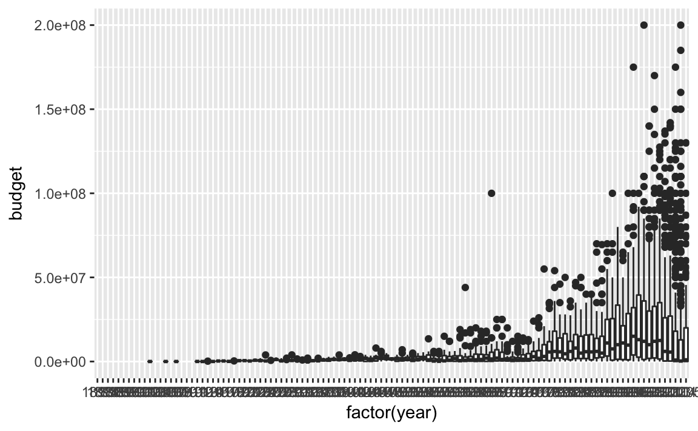
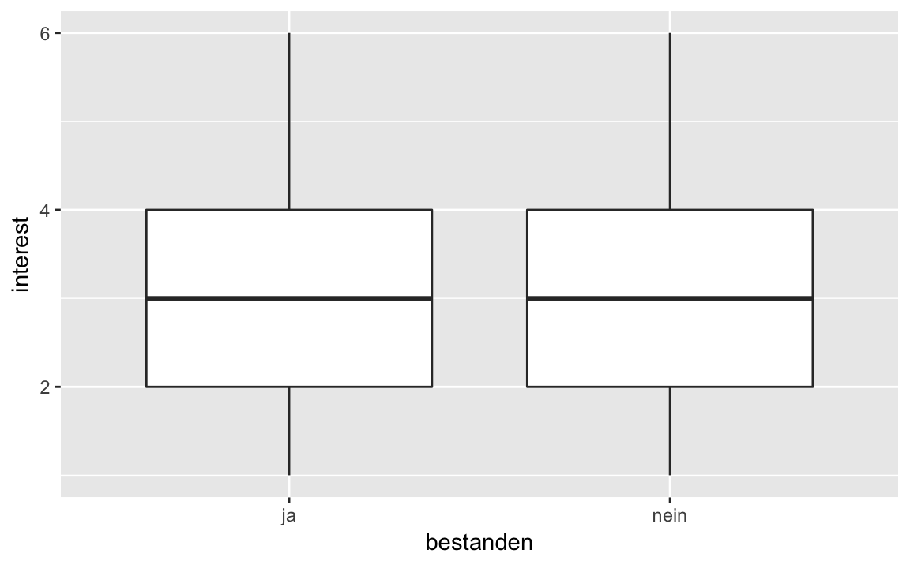
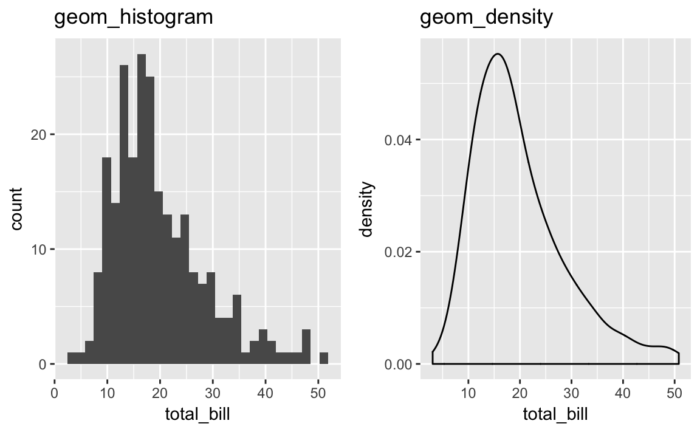

Kapitel 7 Daten visualisieren


Lernziele:
- An einem Beispiel erläutern können, warum/ wann ein Bild mehr sagt, als 1000 Worte.
- Häufige Arten von Diagrammen erstellen können.
- Diagramme bestimmten Zwecken zuordnen können.
In diesem Kapitel werden folgende Pakete benötigt:
library(tidyverse) # Zum Plotten
library(ggplot2movies) # Daten 'movies'
# library(prada) # optional: Daten 'wo_men', 'stats'test'
# library(AER) # optional: Daten 'Affairs'
# library(okcupiddata) # optional: Daten 'profiles'
Dieses Kapitel erläutert das Daten visualisieren anhand des R-Pakets ggplot2.
7.1 Ein Bild sagt mehr als 1000 Worte
Ein Bild sagt bekanntlich mehr als 1000 Worte. Schauen wir uns zur Verdeutlichung das berühmte Beispiel von Anscombe39 an. Es geht hier um vier Datensätze mit zwei Variablen (Spalten; X und Y). Offenbar sind die Datensätze praktisch identisch: Alle X haben den gleichen Mittelwert und die gleiche Varianz; dasselbe gilt für die Y. Die Korrelation zwischen X und Y ist in allen vier Datensätzen gleich. Allerdings erzählt eine Visualisierung der vier Datensätze eine ganz andere Geschichte.

Abbildung 7.1: Das Anscombe-Quartett
Offenbar “passieren” in den vier Datensätzen gänzlich unterschiedliche Dinge. Dies haben die Statistiken nicht aufgedeckt; erst die Visualisierung erhellte uns… Kurz: Die Visualisierung ist ein unverzichtbares Werkzeug, um zu verstehen, was in einem Datensatz (und damit in der zugrunde liegenden “Natur”) passiert.
Eine coole Variante mit der gleichen Botschaft findet sich hier bzw. mit einer Animation hier; vgl. Matejka und Fitzmaurice (2017).
{kind=link}
Es gibt viele Möglichkeiten, Daten zu visualisieren (in R). Wir werden uns hier auf einen Weg bzw. ein Paket konzentrieren, der komfortabel, aber mächtig ist und gut zum Prinzip des Durchpfeifens passt: ggplot240.
7.2 Die Anatomie eines Diagramms
ggplot2 unterscheidet folgende Bestandteile (“Anatomie”) eines Diagramms (vgl. Abb. 7.2):
- Daten
- Abbildende Aspekte (Achsen, Farben, …)
- Geome (statistische Bilder wie Punkte, Linien, Boxplots, …)

Abbildung 7.2: Anatomie eines Diagramms
Bei Daten muss ein Dataframe angegeben werden. Zu den abbildenden Aspekte (in ggplot2 als “aesthetics” bzw. aes bezeichnet) zählen vor allem die Achsen, aber auch Farben u.a. Was ist mit abbildend gemeint? Weist man einer Achse einen Variable zu, so wird jede Ausprägung der Variablen einer Ausprägung der Achse zugeordnet (welcher Wert genau entscheidet ggplot2 für uns, wenn wir es nicht explizieren). Mit Geom ist das eigentlich Art von “Bild” gemeint, wie Punkt, Linie oder Boxplot (vgl. Abschnitt 7.10).
Erstellt
ggplot2ein Diagramm, so ordnet es Spalten den Bestandteilen des zu erzeugenden Diagramms zu (auch “mapping” genannt).
7.3 Einstieg in ggplot2 - qplot
Los geht’s! Laden wir zuerst den Datensatz movies.
data(movies, package = "ggplot2movies")Betrachten Sie zum Einstieg das Diagramm 7.3:
- Welche Variable steht auf der X-Achse?
- Welche Variable steht auf der Y-Achse?
- Was wird gemalt? Linien, Boxplots, Punkte?
- Wie heißt der Datensatz, aus dem die Daten gezogen werden?
Der Befehl, der dieses Diagramm erzeugte, heißt qplot. Es ist ziemlich genau die Antwort auf die Übungsfragen von gerade eben:
qplot(x = year,
y = budget,
geom = "point",
data = movies)Abbildung 7.3: Mittleres Budget pro Jahr
Schauen wir uns den Befehl qplot etwas näher an. Wie ist er aufgebaut?
qplot: Erstelle schnell (q wie quick in qplot) mal einen Plot (engl. “plot”: Diagramm).
x: Der X-Achse soll die Variable “year” zugeordnet werden.
y: Der Y-Achse soll die Variable “budget” zugeorndet werden.
geom: (“geometriches Objekt”) Gemalt werden sollen Punkte und zwar pro Beobachtung (hier: Film) ein Punkt; nicht etwa Linien oder Boxplots. data: Als Datensatz bitte movies verwenden.
Offenbar geht die Schwere in den Budgets auseinander; außerdem scheint das Budget größer zu werden. Genau kann man es aber schlecht erkennen in diesem Diagramm. Besser ist es vielleicht die Daten pro Jahr zusammenzufassen in einem Geom und dann diese Geome zu vergleichen:
qplot(x = factor(year),
y = budget,
geom = "boxplot",
data = movies)
Übrigens: factor(year) wird benötigt, um aus year eine nominalskalierte Variable zu machen. Nur bei nominalskalierten Variablen auf der X-Achse zeichnet qplot mehrere Boxplots nebeneinander. qplot bzw. ggplot2 denkt sich: “Hey, nur wenn es mehrere Gruppen gibt, macht es Sinn, die Gruppen anhand von Boxplots zu vergleichen. Also brauchst du eine Gruppierungsvariable - Faktor oder Text - auf der X-Achse!”.
Es sind zu viele Jahre, das macht das Diagramm unübersichtlich. Besser wäre es, Jahrzehnte dazustellen. Ein Jahrzehnt ist so etwas wie eine Jahreszahl, von der die letzte Ziffer abgeschnitten (d.h. durch 10 teilen und runden) und dann durch eine Null ersetzt wurde (d.h. mit 10 multiplizieren):
movies %>%
mutate(Jahrzehnt = year / 10) %>%
mutate(Jahrzehnt = trunc(Jahrzehnt)) %>% # trunkieren, abrunden
mutate(Jahrzehnt = Jahrzehnt * 10) -> moviesSchauen Sie sich die ersten Werte von Jahrzehnt mal an: movies %>% select(Jahrzehnt) %>% head.
Ok, auf ein neues Bild (Abb. 7.4):
qplot(x = factor(Jahrzehnt),
y = budget,
geom = "boxplot",
data = movies) Abbildung 7.4: Film-Budgets über die die Jahrzehnte
Aha, gut. Interessanterweise sanken die Budgets gegen Ende unserer Datenreihe; das ist aber vielleicht nur ein Zufallsrauschen.
“q” in qplot steht für “quick”. Tatsächlich hat qplot einen großen Bruder, ggplot41, der deutlich mehr Funktionen aufweist - und daher auch die umfangreichere (komplexere) Syntax. Fangen wir mit qplot an.
Diese Syntax des letzten Beispiels ist recht einfach, nämlich:
qplot (x = X_Achse,
y = Y_Achse,
data = mein_dataframe,
geom = "ein_geom")Wir definieren mit x, welche Variable der X-Achse des Diagramms zugewiesen werden soll, z.B. month; analog mit Y-Achse. Mit data sagen wir, in welchem Dataframe die Spalten “wohnen” und als “geom” ist die Art des statistischen “geometrischen Objects” gemeint, also Punkte, Linien, Boxplots, Balken…
7.4 Häufige Arten von Diagrammen
Unter den vielen Arten von Diagrammen und vielen Arten, diese zu klassifizieren greifen wir uns ein paar häufige Diagramme heraus und schauen uns diese der Reihe nach an.
7.4.1 Eine kontinuierliche Variable
Schauen wir uns die Verteilung von Filmbudgets aus movies an (s. Abb. 7.5).
qplot(x = budget, data = movies)
Abbildung 7.5: Verteilung des Budgets von Filmen
Weisen wir nur der X-Achse (aber nicht der Y-Achse) eine kontinuierliche Variable zu, so wählt ggplot2 automatisch als Geom automatisch ein Histogramm; wir müssen daher nicht explizieren, dass wir ein Histogramm als Geom wünschen (aber wir könnten es hinzufügen).
Was heißt das kleine ‘e’, das man bei wissenschaftlichen Zahlen hin und wieder sieht (wie im Diagramm 7.5)?
Zum Beispiel: 5.0e+07. Das \(e\) sagt, wie viele Stellen im Exponenten (zur Basis 10) stehen: hier \(10^{07}\). Eine große Zahl - eine \(1\) gefolgt von sieben Nullern: 10000000. Die schöne Zahl soll noch mit 5 multipliziert werden: also 50000000. Bei so vielen Nullern kann man schon mal ein Flimmern vor den Augen bekommen… Daher ist die “wissenschaftliche” Notation ganz praktisch, wenn die Zahlen sehr groß (oder sehr klein) werden. Sehr kleine Zahlen werden mit dieser Notation so dargestellt: 5.0e-07 heißt \(frac{1}{10^7}\). Eine Zahl sehr nahe bei Null. Das Minuszeichen zeigt hier, dass wir den Kehrwert der großen Zahl nehmen sollen.
Alternativ wäre ein Dichtediagramm hier von Interesse:
qplot(x = budget, data = movies, geom = "density")
Was man sich merken muss, ist, dass hier nur das Geom mit Anführungsstrichen zu benennen ist, die übrigen Parameter ohne.
Vielleicht wäre es noch schön, beide Geome zu kombinieren in einem Diagramm. Das ist etwas komplizierter; wir müssen zum großen Bruder ggplot umsteigen, da qplot nicht diese Funktionen anbietet.
ggplot(data = movies) +
aes(x = budget) +
geom_histogram(aes(y = ..density..), alpha = .7) +
geom_density(color = "blue")
Zuerst haben wir mit dem Parameter data den Dataframe benannt. aes definiert, welche Variablen welchen Achsen (oder auch z.B. Füllfarben) zugewiesen werden. Hier sagen wir, dass die Schuhgröße auf X-Achse stehen soll. Das +-Zeichen trennt die einzelnen Bestandteile des ggplot-Aufrufs voneinander. Als nächstes sagen wir, dass wir gerne ein Histogram hätten: geom_histogram. Dabei soll aber nicht wie gewöhnlich auf der X-Achse die Häufigkeit stehen, sondern die Dichte. ggplot berechnet selbständig die Dichte und nennt diese Variable ..density..; die vielen Punkte sollen wohl klar machen, dass es sich nicht um eine “normale” Variable aus dem eigenen Datenframe handelt, sondern um eine “interne” Variable von ggplot - die wir aber nichtsdestotrotz verwenden können. alpha bestimmt die “Durchsichtigkeit” eines Geoms; spielen Sie mal etwas damit herum. Schließlich malen wir noch ein blaues Dichtediagramm über das Histogramm.
Wünsche sind ein Fass ohne Boden… Wäre es nicht interessant, einzelne Zeiträume (Jahrzehnte) zu vergleichen? Schauen wir uns die letzten Jahrzehnte im Vergleich an.
movies2 <- filter(movies, Jahrzehnt > 1980)
movies2 %>%
mutate(Jahrzehnt = factor(.$Jahrzehnt)) -> movies2
qplot(x = budget,
data = movies2,
geom = "density",
fill = Jahrzehnt,
alpha = I(.7))
qplot erwartet immer Variablen als Parameter; wollen wir mal keine Variable, sondern eine fixen Wert, wie 0.7, übergeben, so können wir das mit dem Befehl I (wie “identity”) tun.
Hier sollten vielleicht noch die Extremwerte entfernt werden, um den Blick auf das Gros der Werte nicht zu verstellen:
movies2 %>%
filter(budget < 1e08) -> movies2
qplot(x = budget,
data = movies2,
geom = "density",
fill = Jahrzehnt,
alpha = I(.7))
Besser. Man kann das Durchpfeifen auch bis zu qplot weiterführen:
movies %>%
filter(budget < 1e+08, Jahrzehnt >= 1990) %>%
mutate(Jahrzehnt = factor(Jahrzehnt)) %>%
qplot(x = budget, data = ., geom = "density",
fill = Jahrzehnt, alpha = I(.7))
Die Pfeife versucht im Standard, das Endprodukt des letzten Arbeitsschritts an den ersten Parameter des nächsten Befehls weiterzugeben. Ein kurzer Blick in die Hilfe von qplot zeigt, dass der erste Parameter nicht data ist, sondern x. Daher müssen wir explizit sagen, an welchen Parameter wir das Endprodukt des letzen Arbeitsschritts geben wollen. Netterweise müssen wir dafür nicht viel tippen: Mit einem schlichten Punkt . können wir sagen “nimm den Dataframe, so wie er vom letzten Arbeitsschritt ausgegeben wurde”.
Mit fill = Jahrzehnt sagen wir qplot, dass er für jedes Jahrzehnt jeweils ein Dichtediagramm erzeugen soll; jedem Dichtediagramm wird dabei eine Farbe zugewiesen (die uns ggplot2 im Standard voraussucht). Mit anderen Worten: Die Werte von Jahrzehnt werden der Füllfarbe der Histogramme zugeordnet. Anstelle der Füllfarbe hätten wir auch die Linienfarbe verwenden können; die Syntax wäre dann: color = sex. Man beachte, dass die Variable für fill oder color eine nominale Variable (factor oder character) sein muss, damit ggplot2 tut, was will wollen.
7.4.2 Zwei kontinuierliche Variablen
Ein Streudiagramm ist die klassische Art, zwei metrische Variablen darzustellen. Das ist mit qplot einfach:
p <- qplot(x = budget, y = rating, data = movies2)
p
Wir weisen wieder der X-Achse und der Y-Achse eine Variable zu; handelt es sich in beiden Fällen um Zahlen, so wählt ggplot2 automatisch ein Streudiagramm - d.h. Punkte als Geom (geom = "point").
Es ist nicht wirklich ein Trend erkennbar: Teuere Filme sind nicht unbedingt beliebter bzw. besser bewertet. Zeichnen wir eine Trendgerade ein.
p + geom_smooth(method = "lm")
Synonym könnten wir auch schreiben:
wo_men %>%
filter(height > 150, height < 210, shoe_size < 55) %>%
ggplot() +
aes(x = height, y = shoe_size) +
geom_point() +
geom_smooth(method = "lm")Da ggplot als ersten Parameter die Daten erwartet, kann die Pfeife hier problemlos durchgereicht werden. Innerhalb eines ggplot-Aufrufs werden die einzelne Teile durch ein Pluszeichen + voneinander getrennt. Nachdem wir den Dataframe benannt haben, definieren wir die Zuweisung der Variablen zu den Achsen mit aes (“aes” wie “aesthetics”, also das “Sichtbare” eines Diagramms, die Achsen etc., werden definiert). Ein “Smooth-Geom” ist eine Linie, die sich schön an die Punkte anschmiegt, in diesem Falls als Gerade (lineares Modell, lm).
Bei sehr großen Datensätze, sind Punkte unpraktisch, da sie sich überdecken (“overplotting”). Ein Abhilfe ist es, die Punkte nur “schwach” zu färben. Dazu stellt man die “Füllstärke” der Punkte über alpha ein: geom_point(alpha = 1/100). Um einen passablen Alpha-Wert zu finden, bedarf es häufig etwas Probierens. Zu beachten ist, dass es mitunter recht lange dauert, wenn ggplot viele (>100.000) Punkte malen soll.
Probieren Sie auch Folgendes aus: Fügen Sie bei aes den Parameter color = sex hinzu.
Bei noch größeren Datenmengen bietet sich an, den Scatterplot als “Schachbrett” aufzufassen, und das Raster einzufärben, je nach Anzahl der Punkte pro Schachfeld; zwei Geome dafür sind geom_hex() und geom_bin2d().
nrow(movies) # groß, ein bisschen wenigstens
#> [1] 58788
ggplot(movies) +
aes(x = year, y = budget) +
geom_hex()
Wenn man dies verdaut hat, wächst der Hunger nach einer Aufteilung in Gruppen.
wo_men %>%
dplyr::filter(height > 150, height < 210, shoe_size < 55) -> wo_men2
wo_men2 %>%
qplot(x = height, y = shoe_size, color = sex, data = .)
Mit color = sex sagen wir, dass die Linienfarbe (der Punkte) entsprechend der Stufen von sex eingefärbt werden sollen. Die genaue Farbwahl übernimmt ggplot2 für uns.
Alternativ kann man auch zwei “Teil-Bildchen” (“facets”) erstellen, eines für Frauen und eines für Männer:
wo_men %>%
dplyr::filter(height > 150, height < 210, shoe_size < 55) %>%
qplot(x = height, y = shoe_size, facets = "~sex", color = sex, data = .)
Man beachte die Tilde ~, die vor die “Gruppierungsvariable” sex zu setzen ist.
7.4.3 Eine nominale Variable
Bei nominalen Variablen, geht es in der Regel darum, Häufigkeiten auszuzählen. Ein Klassiker: Wie viele Männer und Frauen finden sich in dem Datensatz? Wie viele Studenten haben (nicht) bestanden?
stats_test <- read.csv("data/stats_test.csv")
qplot(x = bestanden, data = stats_test)
Falls nur die X-Achse definiert ist und dort eine Faktorvariable oder eine Textvariable steht, dann nimmt qplot automatisch ein Balkendiagramm als Geom (es steht uns frei, trotzdem geom = bar anzugeben).
Wir könnten uns jetzt die Frage stellen, wie viele Nicht-Interessierte und Hoch-Interessierte es in der Gruppe, die bestanden hat (bestanden == "yes") gibt; entsprechend für die Gruppe, die nicht bestanden hat.
qplot(x = bestanden, fill = factor(interest), data = stats_test)
Hier haben wir qplot gesagt, dass der die Balken entsprechend der Häufigkeit von interest füllen soll. Damit qplot (und ggplot) sich bequemt, die Füllung umzusetzen, müssen wir aus interet eine nominalskalierte Variablen machen - factor macht das für uns.
Schön wäre noch, wenn die Balken Anteile (Prozentwerte) angeben würden. Das geht mit qplot (so) nicht; wir schwenken auf ggplot um. Und, um die Story zuzuspitzen, schauen wir uns nur die Extremwerte von interest an.
stats_test %>%
filter(interest == 1 | interest == 6) %>%
ggplot() +
aes(x = bestanden, fill = factor(interest)) +
geom_bar(position = "fill")
Der Lehrer freut sich: In der Gruppe, die bestanden hat, ist der Anteil der freaks Hoch-Interessierten größer als bei den Durchfallern.
Schauen wir uns die Struktur des Befehls ggplot näher an.
stats_test: Hey R, nimm den Datensatz stats_test UND DANN… ggplot() : Hey R, male ein Diagramm von Typ ggplot (mit dem Datensatz aus dem vorherigen Pfeifen-Schritt, d.h. aus der vorherigen Zeile, also stats_test)!
filter: wir wollen nur Zeilen (Studenten), für die gilt interest == 1 oder interest == 6. Der horizontale Strich heißt ‘oder’.
+: Das Pluszeichen grenzt die Teile eines ggplot-Befehls voneinander ab.
aes: von “aethetics”, also welche Variablen des Datensatzes den sichtbaren Aspekten (v.a. Achsen, Farben) zugeordnet werden.
x: Der X-Achse (Achtung, x wird klein geschrieben hier) wird die Variable bestanden zugeordnet.
y: gibt es nicht??? Wenn in einem ggplot-Diagramm keine Y-Achse definiert wird, wird ggplot automatisch ein Histogramm bzw. ein Balkendiagramm erstellen. Bei diesen Arten von Diagrammen steht auf der Y-Achse keine eigene Variable, sondern meist die Häufigkeit des entsprechenden X-Werts (oder eine Funktion der Häufigkeit, wie relative Häufigkeit).
fill Das Diagramm (die Balken) sollen so gefüllt werden, dass sich die Häufigkeit der Werte von interest darin widerspiegelt. geom_XYZ: Als “Geom” soll ein Balken (“bar”) gezeichnet werden. Ein Geom ist in ggplot2 das zu zeichnende Objekt, also ein Boxplot, ein Balken, Punkte, Linien etc. Entsprechend wird gewünschte Geom mit geom_bar, geom_boxplot, geom_pointetc. gewählt.position = fill:position_fillwill sagen, dass die Balken alle eine Höhe von 100% (1) haben, d.h. gleich hoch sind. Die Balken zeigen also nur die Anteile der Werte derfill`-Variablen.
Die einzige Änderung in den Parametern ist position = "fill". Dieser Parameter weist ggplot an, die Positionierung der Balken auf die Darstellung von Anteilen auszulegen. Damit haben alle Balken die gleiche Höhe, nämlich 100% (1). Aber die “Füllung” der Balken schwankt je nach der Häufigkeit der Werte von groesse_gruppe pro Balken (d.h. pro Wert von sex).
Wir sehen, dass die Anteile von großen bzw. kleinen Menschen bei den beiden Gruppen (Frauen vs. Männer) unterschiedlich hoch ist. Dies spricht für einen Zusammenhang der beiden Variablen; man sagt, die Variablen sind abhängig (im statistischen Sinne).
Je unterschiedlicher die “Füllhöhe”, desto stärker sind die Variablen (X-Achse vs. Füllfarbe) voneinander abhängig (bzw. desto stärker der Zusammenhang).
7.4.4 Zwei nominale Variablen
Arbeitet man mit nominalen Variablen, so sind Kontingenztabellen Täglich Brot. Z.B.: Welche Produkte wurden wie häufig an welchem Standort verkauft? Wie viele Narzissten gibt es in welcher Management-Stufe? Wie ist die Verteilung von Alkoholkonsum und Körperform bei Menschen einer Single-Börse?. Bleiben wir bei letztem Beispiel.
data(profiles, package = "okcupiddata")
profiles %>%
dplyr::count(drinks, body_type) %>%
ggplot +
aes(x = drinks, y = body_type, fill = n) +
geom_tile() +
theme(axis.text.x = element_text(angle = 90))
Was haben wir gemacht? Also:
Nehme den Datensatz “profiles” UND DANN
Zähle die Kombinationen von “drinks” und “body_type” UND DANN
Erstelle ein ggplot-Plot UND DANN
Weise der X-Achse “drinks” zu, der Y-Achse “body_type” und der Füllfarbe “n” UND DANN
Male Fliesen UND DANN
Passe das Thema so an, dass der Winkel für Text der X-Achse auf 90 Grad steht.
Diese Art von Diagramm nennt man auch ‘Mosaicplot’, weil es an ein Mosaic erinnert (wer hätt’s gedacht).
Was sofort ins Auge sticht, ist dass “soziales Trinken”, nennen wir es mal so, am häufigsten ist, unabhängig von der Körperform. Ansonsten scheinen die Zusammenhäng nicht sehr stark zu sein.
7.4.5 Zusammenfassungen zeigen
Manchmal möchten wir nicht die Rohwerte einer Variablen darstellen, sondern z.B. die Mittelwerte pro Gruppe. Mittelwerte sind eine bestimmte Zusammenfassung einer Spalte; also fassen wir zuerst die Körpergröße zum Mittelwert zusammen - gruppiert nach Geschlecht.
stats_test %>%
group_by(bestanden) %>%
summarise(interest_mw = mean(interest, na.rm = TRUE)) -> stats_test_summary
stats_test_summary
#> # A tibble: 2 x 2
#> bestanden interest_mw
#> <fctr> <dbl>
#> 1 ja 3.26
#> 2 nein 2.97Diese Tabelle schieben wir jetzt in ggplot2; natürlich hätten wir das gleich in einem Rutsch durchpfeifen können.
stats_test_summary %>%
qplot(x = bestanden, y = interest_mw, data = .)
Das Diagramm besticht nicht durch die Tiefe und Detaillierung. Bereichern wir das Diagramm um die Frage, wie viel (jeder Student gelernt hat (study_time). Schauen wir uns aber der Einfachheit halber nur die Studenten an, die ganz viel oder ganz wenig gelernt haben.
stats_test %>%
group_by(bestanden, study_time) %>%
summarise(interest_mw = mean(interest, na.rm = TRUE)) %>%
qplot(x = bestanden, y = interest_mw, data = ., color = factor(study_time)) +
geom_line(aes(group = factor(study_time)))
In Pseudosyntax:
Nehme den Datensatz “stats_test” UND DANN
gruppiere nach den Variablen bestanden und study_time UND DANN fasse für diese Gruppen jeweils die Spalte interest zum Mittelwert zusammen UND DANN
male einen schnellen Plot mit diesen Daten UND DANN füge ein Liniendiagramm dazu, wobei jede Stufe von study_time eine Gruppe ist. Und Punkte einer Gruppe sollen verbunden werden.
Warum steht der arme pinkfarbene Punkt bei ‘ja’ und ~4.5 so für sich alleine oder Linie?42
Alternativ, und deutlich informationsreicher (besser) sind hier Boxplots.
qplot(x = bestanden,
y = interest,
data = stats_test,
geom = "boxplot")
Hm, wie Sie sehen, sehen Sie nix. Kein Unterschied im Median zwischen den Gruppen. Vergleichen wir mal die Punkte zwischen den einzelnen Interessenstufen.
qplot(x = factor(interest),
y = score,
data = stats_test,
geom = "boxplot")
Das factor(interest) brauchen wir, weil ggplot2 nur dann mehrere Boxplots malt, wenn es Gruppen zum Vergleichen (auf der X-Achse) gibt - sprich wenn auf der X-Achse eine Faktor- oder Textvariable steht.
7.4.6 Überblick zu häufigen Diagrammtypen
Die Tabelle 7.1 und Abbildung 7.6 fassen die gerade besprochenen Diagrammtypen zusammen.
| X-Achse | Y-Achse | Diagrammtyp |
|---|---|---|
| kontinuierliche Variable | - | Histogramm, Dichtediagramm |
| kontinuierliche Variable | kontinuierliche Variable | Punkte, Schachbrett-Diagramme |
| nominale Variable | - | Balkendiagramm |
| nominale Variable | nominale Variable | Mosaicplot (Fliesendiagramm) |
| nominale Variable | metrische Variable | Punktediagramm für Zusammenfassungen |
| nominale Variable | metrische Variable | Boxplots (besser) |
Abbildung 7.6: Überblick zu häufigen Diagrammtypen
7.5 Die Gefühlswelt von ggplot2
- Geben Sie eine diskrete X-Achse an und keine Y-Achse, so greift
qplotim Standard auf das Geombarzurück (Balkendiagramm), falls Sie kein Geom angeben:
qplot(x = score, data = stats_test) # identisch zu
qplot(x = score, data = stats_test, geom = "bar")- Geben Sie eine kontinuierliche X-Achse an und keine Y-Achse, so greift qplot im Standard auf das Geom
histogramzurück (Histogramm).
qplot(x = score, data = stats_test) # identisch zu
qplot(x = score, data = stats_test, geom = "histogram")- Geben Sie eine kontinuierliche X-Achse an und eine kontinuierliche Y-Achse an, so greift qplot im Standard auf das Geom
pointzurück (Streudiagramm).
qplot(x = score, y = self-eval, data = stats_test) # identisch zu
qplot(x = score, y= self-eval, data = stats_test, geom = "point")- Möchten Sie mehrere Geome für eine Variable darstellen, so muss die Gruppierungs-Variable diskret sein:
#oh no:
qplot(x = rating, y = affairs, geom = "boxplot", data = Affairs)
#oh yes:
qplot(x = factor(rating), y = affairs, geom = "boxplot", data = Affairs)
#oh yes:
qplot(x = gender, y = affairs, geom = "boxplot", data = Affairs)7.6 Aufgaben
Erzählen Sie einer vertrauenswürdigen Person jeweils eine “Geschichte”, die das Zustandekommen der vier Plots von Anscombe (Abb. 7.1) erklärt!
Abb. 7.4 stellt das mittlerer Budget von Filmen dar; als “Geom” wird ein Boxplot verwendet. Andere Geome wären auch möglich - aber wie sinnvoll wären sie?
Erstellen Sie ein Diagramm, welches Histogramme der Verspätung verwendet anstelle von Boxplots! Damit das Diagramm nicht so groß wird, nehmen Sie zur Gruppierung nicht
carriersondernorigin.Ist das Histogramm genauso erfolgreich wie der Boxplot, wenn es darum geht, viele Verteilungen vergleichend zu präsentieren? Warum?
Erstellen Sie ein sehr grobes und ein sehr feines Histogramm für die Schuhgröße!
Vertiefung: Erstellen Sie ein Diagramm, das sowohl eine Zusammenfassung (Mittelwert) der Körpergrößen nach Geschlecht darstellt als auch die einzelnen Werte darstellt!
7.7 Lösungen
:-)
:
qplot(x = budget, geom = "histogram", data = movies, facets = ~factor(Jahrzehnt))Abbildung 7.7: Film-Budgets mit Histogrammen
Der Boxplot ist besser geeignet als das Histogramm, um mehrere Verteilungen vergleichend zu präsentieren (vgl. Abb. 7.7). Durch die gleiche Ausrichtung der Boxplots ist es dem Auge viel einfacher, Vergleiche anzustellen im Vergleich zu den Histogrammen. Einen optisch schöneren Effekt könnte man mit geom_jitter anstelle von geom_pointerreichen. Auch die Reihenfolge der beiden Geome könnte man umdrehen. Natürlich ist auch an Form, Größe und Farbe der Geome noch zu feilen.
- :
qplot(x = shoe_size, data = wo_men, bins = 10)
qplot(x = shoe_size, data = wo_men, bins = 50)

- :
wo_men2 %>%
group_by(sex) %>%
summarise(height = mean(height)) -> wo_men3
wo_men3 %>%
ggplot() +
aes(x = sex, y = height) +
geom_point(color = "red", size = 8) +
geom_point(data = wo_men2, color = "grey80")
Der “Trick” ist hier, erst die zusammengefassten Daten in ein Geom zu stecken (wo_men3). Dann werden die Rohdaten (wo_men2) ebenfalls in ein Geom gepackt. Allerdings muss die Achsen-Beschriftung bei beiden Geomen identisch sein, sonst gibt es eine Fehlermeldung.
7.8 Richtig oder Falsch43
Richtig oder Falsch!?
Diese Geome gehören zum (Standard-) ggplot2: bar, histogram, point, density, jitter, boxplot.
qplotist eine Funktion im Paketggplot2.Mi
aesdefiniert man, wie “ästethisch” das Diagramm sein soll (z.B. grauer Hintergrund vs. weißer Hintergrund, Farbe der Achsen etc.).Diese Geome gehören zum (Standard-) ggplot2: smooth, line, boxwhisker, mosaicplot.
Möchte man ein Diagramm erstellen, welches auf der X-Achse
total_bill, auf der Y-Achsetipdarstellt, als Geom Punkte verwendet und die Daten aus der Tabelletipsbezieht, so ist folgende Syntax korrekt: `qplot(x = total, bill, y = tip, geom = “point”, data = tips)
7.9 Befehlsübersicht
Tabelle 7.2 fasst die R-Funktionen dieses Kapitels zusammen.
| Paket::Funktion | Beschreibung |
|---|---|
| ggplot2::qplot | Malt schnell mal einen Plot |
| ggplot2::ggplot | Malt einen Plot |
| factor | Wandelt einen Vektor in den Typ factor um |
7.10 Vertiefung: Geome bei ggplot2
Einen guten Überblick über Geome bietet das Cheatsheet von ggplot244.
Verschiedenen Taxonomien von statistischen “Bildchen” sind denkbar; eine einfache ist die folgende; es wird nur ein Teil der verfügbaren Geome dargestellt.
- Eine kontinuierliche Variable

- Zwei kontinuierliche Variablen

- Eine diskrete Variable (X-Achse)
ggplot(wo_men2) +
aes(x = sex) +
geom_bar()
- Eine diskrete Variable auf der X-Achse und eine kontinuierliche Y-Achse

7.11 Verweise
Einen Befehlsüberblick zu
ggplot2findet sich hier: http://ggplot2.tidyverse.org/reference/.Edward Tufte gilt als Grand Seigneur der Datenvisualisierung; er hat mehrere lesenswerte Bücher zu dem Thema geschrieben (Tufte 2001; Tufte 2006; Tufte 1990).
William Cleveland, ein amerikanischer Statistiker ist bekannt für seine grundlegenden, und weithin akzeptierten Ansätze für Diagramme, die die wesentliche Aussage schnörkellos transportieren (Cleveland 1993).
Die (graphische) Auswertung von Umfragedaten basiert häufig auf Likert-Skalen. Ob diese metrisches Niveau aufweisen, darf bezweifelt werden. Hier findet sich einige vertiefenden Überlegungen dazu und zur Frage, wie Likert-Daten ausgewertet werden könnten: https://bookdown.org/Rmadillo/likert/.
Es finden sich viele Tutorials online zu
ggplot2; ein deutschsprachiger Tutorial findet sich hier: http://md.psych.bio.uni-goettingen.de/mv/unit/ggplot2/ggplot2.html.
Literaturverzeichnis
Matejka, Justin, und George Fitzmaurice. 2017. „Same stats, different graphs: Generating datasets with varied appearance and identical statistics through simulated annealing“. In Proceedings of the 2017 CHI Conference on Human Factors in Computing Systems, 1290–4. ACM.
Tufte, Edward R. 2001. The Visual Display of Quantitative Information. Graphics Press.
Tufte, Edward R. 2006. Beautiful Evidence. Graphics Press.
Tufte, Edward R. 1990. Envisioning Information. Graphics Press.
Cleveland, William S. 1993. Visualizing Data. Hobart Press.
“gg” steht für “grammer of graphics” nach einem Buch von Wilkinson(2006); “plot” steht für “to plot”, also ein Diagramm erstellen (“plotten”); vgl. https://en.wikipedia.org/wiki/Ggplot2↩
Achtung: Nicht
qqplot, nichtggplot2, nichtgplot…↩es gibt kein
study_time == 5bei den Durchfallen, d.h. beibestanden == nein.↩R, R, F, F, R↩
https://www.rstudio.com/wp-content/uploads/2015/03/ggplot2-cheatsheet.pdf↩